library(readr)
library(dplyr)
library(car)
library(broom)
library(modelr)
library(performance)
library(ggplot2)
library(GGally)
library(emmeans)
library(visreg)
theme_set(theme_bw(base_size = 14))Interactions and Nonlinearities in the Linear Model
Let’s look at interacting predictors! For today, let’s start with some standard libraries for these analyses.
1. Interacting Categorical Variables
Going with that last intertidal example, if you really looked, it was a factorial design, with multiple treatments and conditions.
intertidal <- read.csv("./data/18e3IntertidalAlgae.csv")
qplot(herbivores, sqrtarea, data=intertidal, fill=height, geom="boxplot")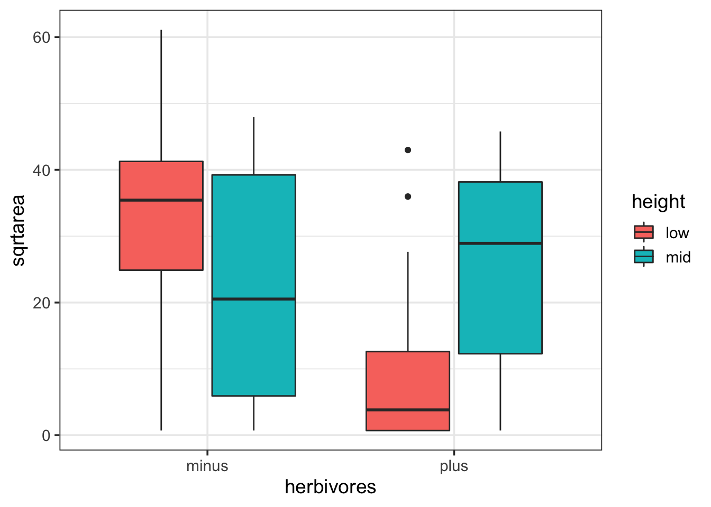
1.1 Fit and Assumption Evaluation
We fit factorial models using one of two different notations - both expand to the same thing
intertidal_lm <- lm(sqrtarea ~ herbivores + height + herbivores:height, data=intertidal)
intertidal_lm <- lm(sqrtarea ~ herbivores*height, data=intertidal)Both mean the same thing as : is the interaction. * just means, expand all the interactions.
But, after that’s done…all of the assumption tests are the same. Try them out.
check_model(intertidal_lm)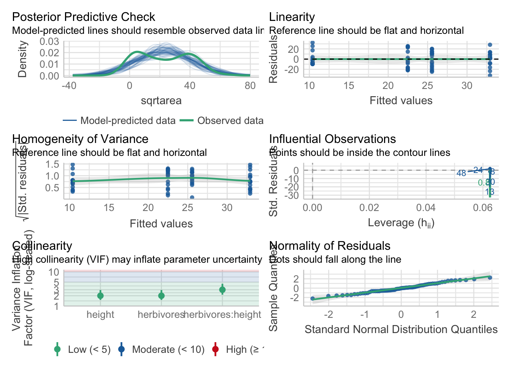
1.2 Post-Hocs
Post-hocs are a bit funnier. But not by much. As we have an interaction, let’s look at the simple effects. There are a few ways we can do this
emmeans(intertidal_lm, ~ herbivores + height) herbivores height emmean SE df lower.CL upper.CL
minus low 32.9 3.86 60 25.20 40.6
plus low 10.4 3.86 60 2.69 18.1
minus mid 22.5 3.86 60 14.77 30.2
plus mid 25.6 3.86 60 17.84 33.3
Confidence level used: 0.95 emmeans(intertidal_lm, ~ herbivores | height)height = low:
herbivores emmean SE df lower.CL upper.CL
minus 32.9 3.86 60 25.20 40.6
plus 10.4 3.86 60 2.69 18.1
height = mid:
herbivores emmean SE df lower.CL upper.CL
minus 22.5 3.86 60 14.77 30.2
plus 25.6 3.86 60 17.84 33.3
Confidence level used: 0.95 emmeans(intertidal_lm, ~ height | herbivores)herbivores = minus:
height emmean SE df lower.CL upper.CL
low 32.9 3.86 60 25.20 40.6
mid 22.5 3.86 60 14.77 30.2
herbivores = plus:
height emmean SE df lower.CL upper.CL
low 10.4 3.86 60 2.69 18.1
mid 25.6 3.86 60 17.84 33.3
Confidence level used: 0.95 Notice how each presents the information in a different way. The numbers are not different, they just show you information in different ways. The contrasts each reference grid implies do make s difference, though, in how p-value corrections for FWER is handled. Consider the first case.
emmeans(intertidal_lm, ~ herbivores + height) |>
contrast(method = "pairwise") contrast estimate SE df t.ratio p.value
minus low - plus low 22.51 5.45 60 4.128 0.0006
minus low - minus mid 10.43 5.45 60 1.913 0.2336
minus low - plus mid 7.36 5.45 60 1.350 0.5350
plus low - minus mid -12.08 5.45 60 -2.215 0.1307
plus low - plus mid -15.15 5.45 60 -2.778 0.0357
minus mid - plus mid -3.07 5.45 60 -0.563 0.9427
P value adjustment: tukey method for comparing a family of 4 estimates OK, cool. Every comparison is made. But what if we don’t want to do that? What if we just want to see if the herbivore effect differs by height?
emmeans(intertidal_lm, ~ herbivores |height) |>
contrast(method = "pairwise")height = low:
contrast estimate SE df t.ratio p.value
minus - plus 22.51 5.45 60 4.128 0.0001
height = mid:
contrast estimate SE df t.ratio p.value
minus - plus -3.07 5.45 60 -0.563 0.5758Notice that, because we’re only doing two contrasts, the correction is not as extreme. This method of contrasts might be more what you are interested in given your question. We can also see how this works visuall.
cont <- emmeans(intertidal_lm, ~ herbivores |height) |>
contrast(method = "pairwise")
plot(cont) +
geom_vline(xintercept = 0, color = "red", lty = 2)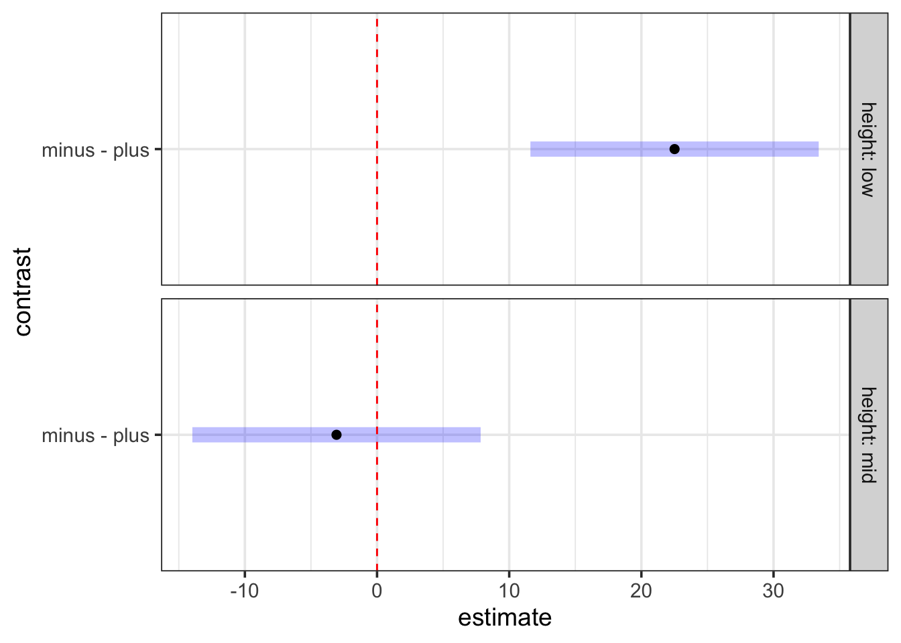
1.3 A Kelpy example
Let’s just jump right in with an example, as you should have all of this well in your bones by now. This was from a kelp, predator-diversity experiment I ran ages ago. Note, some things that you want to be factors might be loaded as
kelp <- read.csv("lab/data/kelp_pred_div_byrnesetal2006.csv")
## Check and correct for non-factors
## (this is some dplyr fun)
____________
_________
#Visualize
________(data = _____,
aes(Treatment, Porp_Change, fill=Trial)) +
geom______()
#fit
kelp_lm <- __(______ ~ ______ * _____, data=________)
#assumptions
performance::_______(__________)
# look at the model
broom::____________(__________)
# how well did we explain the data?
________(_____________)
#Pairwise Comparison of simple effects
emmeans(_______, specs = ~ __________ |___________) |>
contrast(method = "________")1.4 Replicated Regression and mixing Categorical and Continuous Variables
So…. the above was actually a replicated regression design. This is a design where you have continuous treatments, but you replicate at each treatment level. There are a few ways to deal with this. Note the column Predator_Diversity
Try this whole thing as a model with diversity as a continuous predictor an interaction by trial. What do you see?
Note - this is a great time to try out emmeans::emtrends().
Make a new column that is Predator_Diversity as a factor. Refit the factorial ANOVA with this as your treatment. Now try a pairwise test. What do you see? Visualize both. How do they give you different information? What would you conclude?
2. Interaction Effects in MLR
Let’s use the keeley fire severity plant richness data to see it Multiple Linear Regression with interaction effects action.
keeley <- read.csv("./data/Keeley_rawdata_select4.csv")
ggpairs(keeley)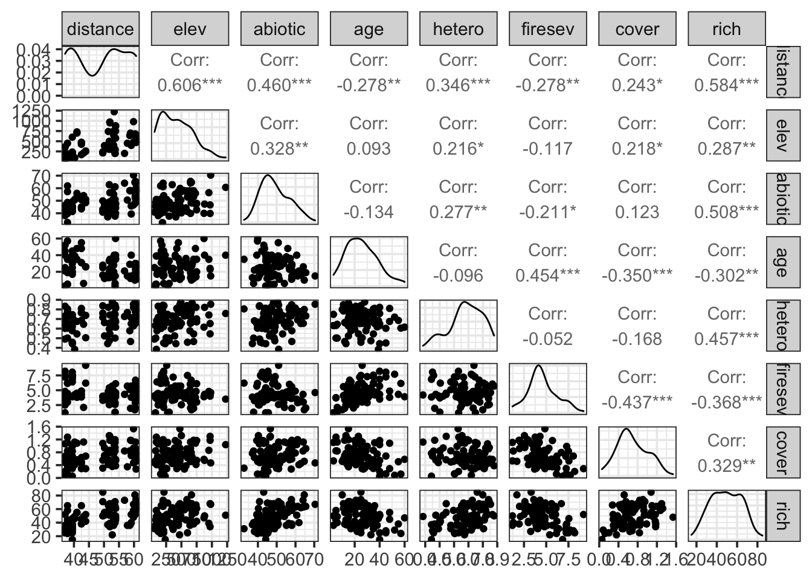
For our purposes, we’ll focus on fire severity and plot age as predictors of richness.
2.1 Explore and Model
What if there was an interaction here? One reasonable hypothesis is that fires affect stands of different ages differently. So, let’s look at richness as a function of age and fire severity. First, we’ll visualize, then fit a model.
ggplot(keeley,
aes(x = age, y = rich, color = firesev)) +
geom_point(size = 2) +
scale_color_viridis_c(option = "B") +
facet_wrap(~cut_number(firesev, 4))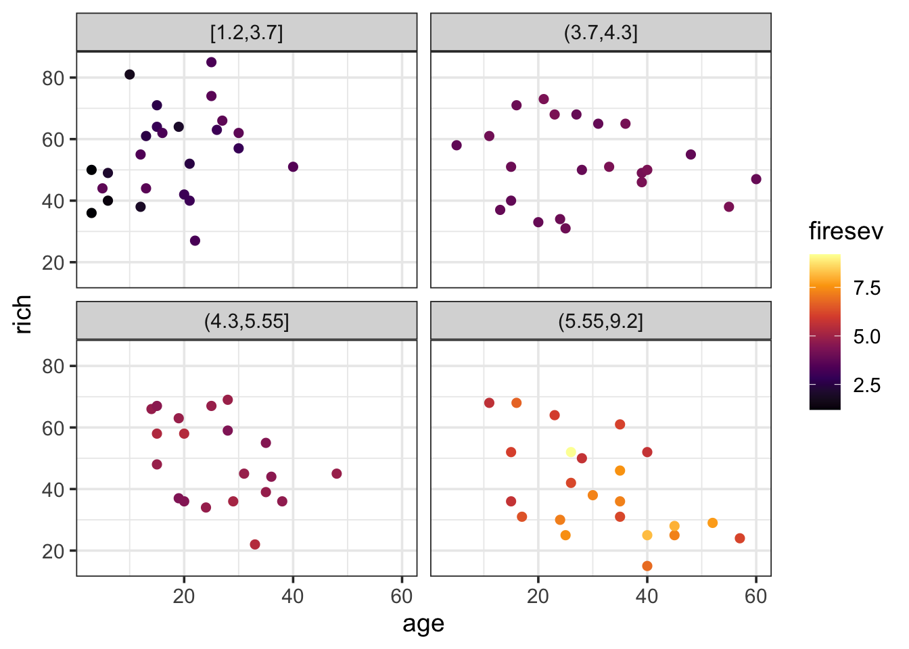
Huh. Kinda looks like age doesn’t have any effect until high fire severity.
keeley_mlr_int <- lm(rich ~ age * firesev, data=keeley)2.2 Assumptions
The assumptions here are the same as for MLR - normality of residuals, homoscedasticity, the relationship should not be driven by outliers alone, and, of course, lack of collinearity. Let’s explore the first few.
check_model(keeley_mlr_int)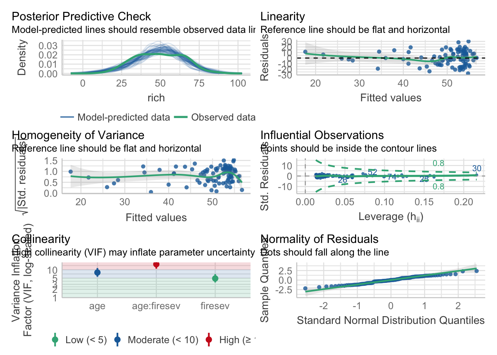
Also, excellent. Now, the vif…
vif(keeley_mlr_int)there are higher-order terms (interactions) in this model
consider setting type = 'predictor'; see ?vif age firesev age:firesev
7.967244 4.879394 15.800768 Oh hey! It tells us there’s a problem with interactions. I like performance’s solution even more.
check_collinearity(keeley_mlr_int)Warning: Model has interaction terms. VIFs might be inflated. You may check
multicollinearity among predictors of a model without interaction terms.# Check for Multicollinearity
Low Correlation
Term VIF VIF 95% CI Increased SE Tolerance Tolerance 95% CI
age 7.97 [5.62, 11.51] 2.82 0.13 [0.09, 0.18]
Moderate Correlation
Term VIF VIF 95% CI Increased SE Tolerance Tolerance 95% CI
firesev 4.88 [3.52, 6.98] 2.21 0.20 [0.14, 0.28]
High Correlation
Term VIF VIF 95% CI Increased SE Tolerance Tolerance 95% CI
age:firesev 15.80 [10.95, 23.01] 3.98 0.06 [0.04, 0.09]Let’s look at the correlation between the predictors to see if there really is a problem.
keeley %>% select(firesev, age) %>%
mutate(int = firesev*age) %>%
cor() firesev age int
firesev 1.0000000 0.4538654 0.7743624
age 0.4538654 1.0000000 0.8687952
int 0.7743624 0.8687952 1.0000000OK, the interaction is pretty highly correlated with age. But, well, again, not really a problem unless it is for the algorithm you are working with. We can instead look at the age-firesev correlation, which is only 0.45. We’re fine.
2.3 Centering?
Well, if we did want to worry about this - or were using an algorithm that choked - one way to break that correlation is to center our predictors before using them in the relationship. It changes the meaning of the coefficients, but, the model results are the same. Let’s try that here.
keeley <- keeley %>%
mutate(firesev_c = firesev - mean(firesev),
age_c = age - mean(age))
keeley_mlr_int_c <- lm(rich ~ age_c * firesev_c, data=keeley)
vif(keeley_mlr_int_c)there are higher-order terms (interactions) in this model
consider setting type = 'predictor'; see ?vif age_c firesev_c age_c:firesev_c
1.261883 1.261126 1.005983 We see the vif is now small. Moreover…
keeley %>% select(firesev_c, age_c) %>%
mutate(int = firesev_c*age_c) %>%
cor() firesev_c age_c int
firesev_c 1.00000000 0.45386536 -0.06336909
age_c 0.45386536 1.00000000 -0.06792114
int -0.06336909 -0.06792114 1.00000000Look at that correlation melt away. We’re still explaining variation in the same way. Let’s see how the coefficients differ.
coef(keeley_mlr_int)(Intercept) age firesev age:firesev
42.9352358 0.8268119 3.1056379 -0.2302444 coef(keeley_mlr_int_c) (Intercept) age_c firesev_c age_c:firesev_c
51.3790453 -0.2242540 -2.7809451 -0.2302444 So, in the no interaction model, the intercept is the richness when age and firesev are 0. The age and firesev effects are their effect when the other is 0, respectively. And the interaction is how they modify one another. Note that in the centered model, the interaction is the same. But, now the intercept is the richness at the average level of both predictors, and the additive predictors are the effects of each predictor at the average level of the other.
2.4 Evaluate
Given the lack of difference between the two models, we’re going to work with the original one. We’ve seen the coefficients and talked about their interpretation. The rest of the output can be interpreted as usual for a linear model.
summary(keeley_mlr_int)
Call:
lm(formula = rich ~ age * firesev, data = keeley)
Residuals:
Min 1Q Median 3Q Max
-27.7559 -10.1586 0.0662 10.7169 30.1410
Coefficients:
Estimate Std. Error t value Pr(>|t|)
(Intercept) 42.93524 7.85054 5.469 4.37e-07 ***
age 0.82681 0.31303 2.641 0.009809 **
firesev 3.10564 1.86304 1.667 0.099157 .
age:firesev -0.23024 0.06412 -3.591 0.000548 ***
---
Signif. codes: 0 '***' 0.001 '**' 0.01 '*' 0.05 '.' 0.1 ' ' 1
Residual standard error: 13.15 on 86 degrees of freedom
Multiple R-squared: 0.268, Adjusted R-squared: 0.2425
F-statistic: 10.5 on 3 and 86 DF, p-value: 5.934e-06Not that it doesn’t look like fire severity has an effect when age is 0. But what does age = 0 really mean? This is one reason by often the centered model is more interpretable.
So, how do we understand the interaction?
We can do things like calculate out the effect of one predictor at different levels of the other…
tibble(age = 0:10) %>%
mutate(fire_effect = coef(keeley_mlr_int)[3] + coef(keeley_mlr_int)[4]*age)# A tibble: 11 × 2
age fire_effect
<int> <dbl>
1 0 3.11
2 1 2.88
3 2 2.65
4 3 2.41
5 4 2.18
6 5 1.95
7 6 1.72
8 7 1.49
9 8 1.26
10 9 1.03
11 10 0.803But this can be unsatisfying, and we have to propogate error and - ECH. Why not try and create something more intuitive…
2.5 Visualize Results
Fundamentally, we have to create visualizations that look at different levels of both predictors somehow. There are a number of strategies.
2.5.1 Visreg
We can begin by looking at the effect of one variable at different levels of the other.
visreg(keeley_mlr_int, "age", "firesev", gg=TRUE)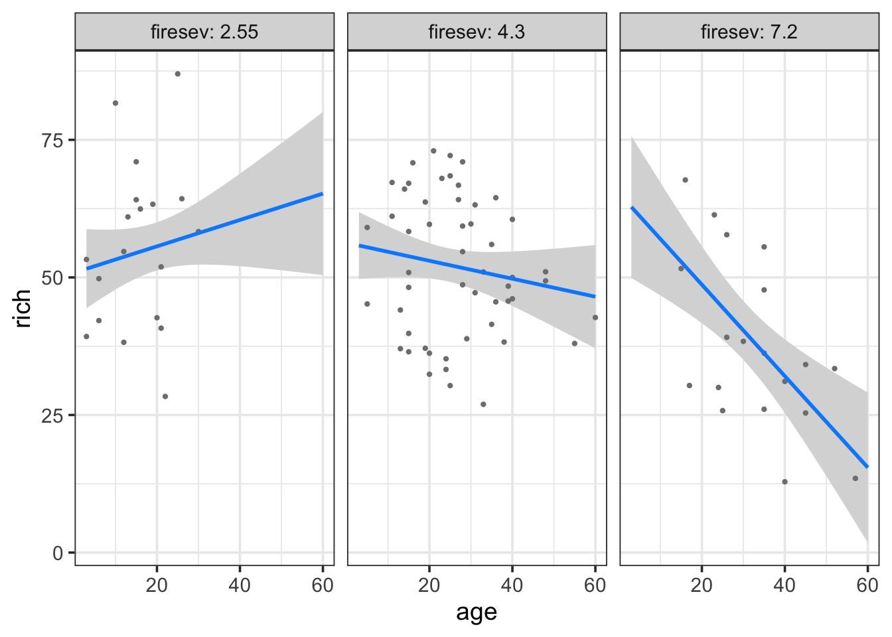
Here we see a plot where the points are adjusted for different levels of fireseverity - an even split between three levels - and then we see the resulting fit lines. We can of course reverse this, if we’re ore interested in the other effect.
visreg(keeley_mlr_int, "firesev", "age", gg=TRUE)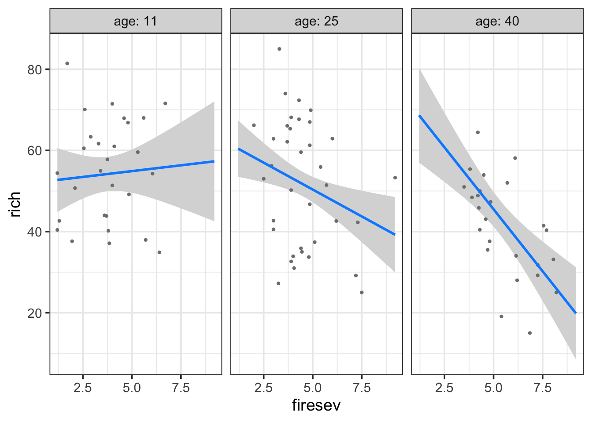
Both tell a compelling story of changing slopes that are easily understood. For example, in the later, fire has a stronger effect on older stands.
2.5.2 Fitted Model under Different Conditions
We might want to roll our own, however, and see the plot with different slices of the data. Fortunately, we can use the identical strategy as our MLR above - only now the slope changes. So, using the same strategy as above for making predicted data frames:
k_int_explore <- data_grid(keeley,
firesev = seq_range(firesev, 100),
age = seq_range(age, 4)) |>
augment(keeley_mlr_int, newdata = _, interval = "confidence") |>
rename(rich = .fitted)Notice the lack of difference. We can now play with how we want to plot this. Here’s one, but you can come up with others easily.
ggplot(keeley,
aes(x = firesev, y = rich, color = age)) +
geom_point() +
geom_line(data = k_int_explore, aes(group = age)) +
geom_ribbon(data = k_int_explore, aes(ymin = .lower, ymax = .upper), alpha = 0.2, color = NA) +
facet_wrap(~cut_interval(age,4)) +
scale_color_viridis_c(option = "D")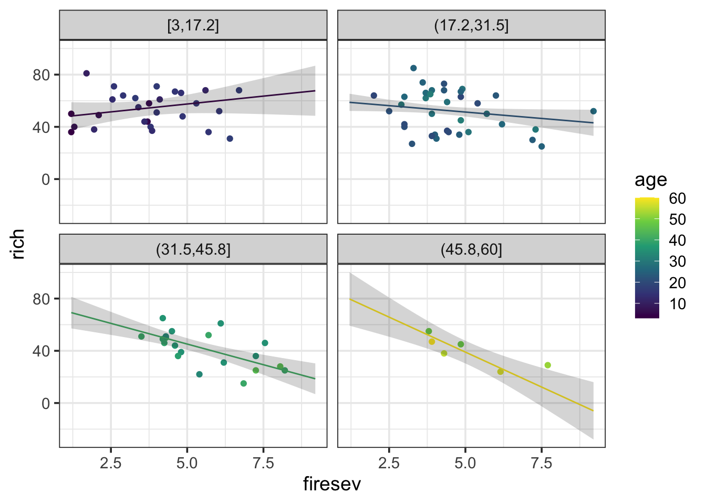
2.5.3 Surface Plot of Model
Finally, a surface plot can be very helpful - particularly under a condition of many interactions. To make a surface plot, we can look at the model and exract values at the intersection of multiple predictors and then visualize a grid where color or some other property reflects predicted values. It lets us see more nuance about an interaction. Let’s start with getting our surface values for a 100x100 grid of predictors.
keeley_surface <- data_grid(keeley,
age = seq_range(age, 100),
firesev = seq_range(firesev, 100)) |>
augment(keeley_mlr_int, newdata = _) |>
rename(rich = .fitted)Now, we can plot this grid using geom_raster or geom_tile (raster will smooth things a bit).
ggplot(keeley_surface,
aes(x = age, y = firesev, fill = rich)) +
geom_raster() +
scale_fill_viridis_c(option = "B")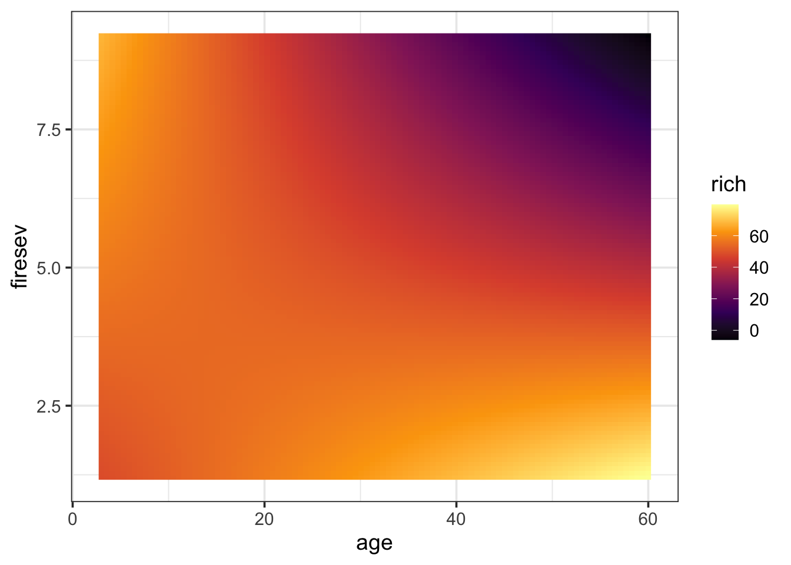
Now we can see the landscape more clearly. old stands with high fire severity have low richness. However, either youth or low fire severity means higher richness. This kind of technique can be great with higher order interactions. For example, you can facet by up to two variables (or more) to examine higher order interactions, etc.
Also note, if you want to be lazy, you can do this with visreg for two variables
visreg2d(keeley_mlr_int, "age", "firesev")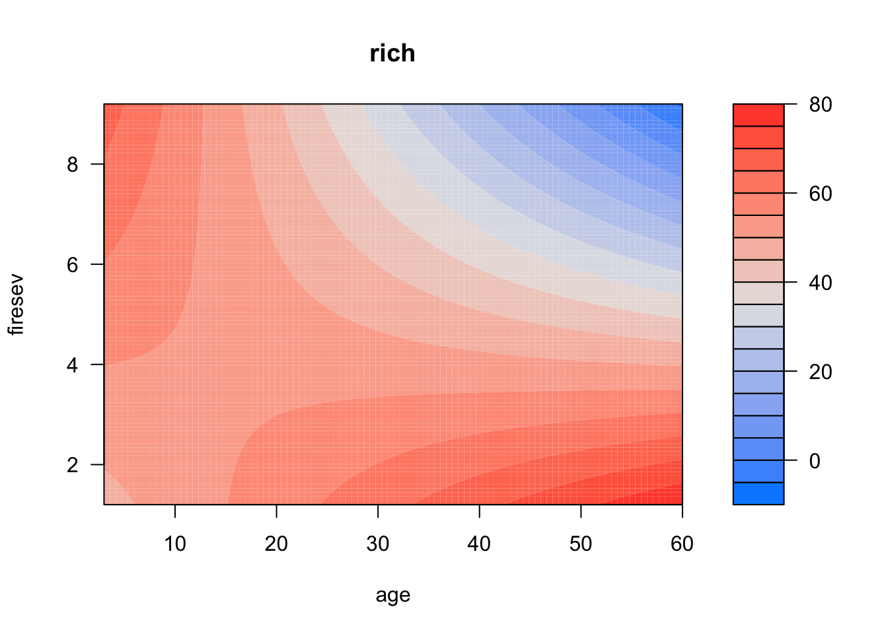
2.6 Examples
OK, here are two datasets to work with. Choose one, and play around with possible interactions using ggplot. Then fit and evaluate a model!
planktonSummary.csvshowing plankton from Lake Biakal (thanks, Stephanie Hampton). Evluate how Chlorophyll (CHLFa) is affected by other predictors.Data on plant species richness in grazed salt marsh meadows in Finland. Meadows are grazed or ungrazed. see
?piecewiseSEM::meadowsto learn more. To load:
data(meadows, package = "piecewiseSEM")- If you are tired of biology, see
data(tips, package = "reshape")which looks at factors which might influence the tips given to one waiter over a few months. See?reshape:tips.
# Load the data
# Perform a preliminary visualization. Play with this and choose two predictors
# Fit a MLR model with an interaction
# Test Asssumptions and modify model if needed
# Evaluate results
# Visualize results